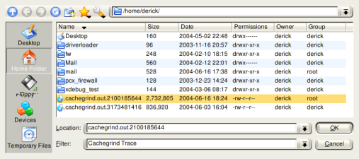
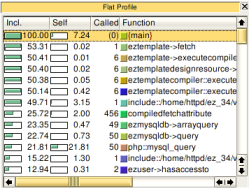
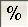
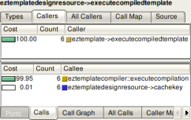
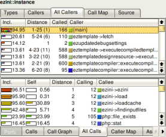

Profiling
Xdebug's built-in profiler allows you to find bottlenecks in your script and visualize those with an external tool such as KCacheGrind or WinCacheGrind.
Introduction
Xdebug's Profiler is a powerful tool that gives you the ability to analyse your PHP code and determine bottlenecks or generally see which parts of your code are slow and could use a speed boost. Since Xdebug 2.6, the profiler also collects information about how much memory is being used, and which functions and methods increase memory usage.
The profiler in Xdebug outputs profiling information in the form of a Cachegrind compatible file. This allows you to use the excellent KCacheGrind tool (Linux, KDE) to analyse your profiling data. If you are on Linux you can install KCacheGrind with your favourite package manager.
If you are on Windows, there are precompiled QCacheGrind binaries available. (QCacheGrind is KCacheGrind without KDE bindings).
If you are on Mac OSX, there are instructions on how to build QCacheGrind too.
Users of Windows can alternatively use WinCacheGrind. The functionality is different from KCacheGrind so the section that documents the use of KCacheGrind on this page doesn't apply to this program. WinCacheGrind currently does not support the file and function compression for cachegrind files that Xdebug 2.3 introduces yet.
There is also an alternative profile information presentation tool called xdebugtoolkit, a web based front-end called Webgrind, and a Java based tool called XCallGraph.
In case you can not use KDE (or do not want to use KDE) the kcachegrind package also comes with a perl script "ct_annotate" which produces ASCII output from the profiler trace files.
Starting The Profiler
Profiling is enabled by setting the xdebug.profiler_enable setting to 1 in php.ini. This instructs Xdebug to start writing profiling information into the dump directory configured with the xdebug.profiler_output_dir directive. The name of the generated file always starts with "cachegrind.out." and ends with either the PID (process ID) of the PHP (or Apache) process or the crc32 hash of the directory containing the initially debugged script. Make sure you have enough space in your xdebug.profiler_output_dir as the amount of information generated by the profiler can be enormous for complex scripts, for example up to 500MB for a complex application like eZ Publish.
You can also selectively enable the profiler with the xdebug.profiler_enable_trigger setting set to 1. If it is set to 1, then you can enable the profiler by using a GET/POST or COOKIE variable of the name XDEBUG_PROFILE. The FireFox 2 extension that can be used to enable the debugger (see HTTP Debug Sessions) can also be used with this setting. In order for the trigger to work properly, xdebug.profiler_enable needs to be set to 0.
From Xdebug 2.6 onwards, Xdebug adds the HTTP header
X-Xdebug-Profile-Filename to a request that is being profiled.
This header contains the name of the file that holds the profiling information
for that request.
Analysing Profiles
After a profile information file has been generated you can open it with KCacheGrind:

Once the file is opened you have plenty of information available in the different panes of KCacheGrind. On the left side you find the "Flat Profile" pane showing all functions in your script sorted by time spent in this function, and all its children.  The second column "Self" shows the time spent in this function (without its children), the third column "Called" shows how often a specific function was called and the last column "Function" shows the name of the function. Xdebug changes internal PHP function names by prefixing the function name with "php::" and include files are handled in a special way too. Calls to include (and include_once, require and require_once) are followed by "::" and the filename of the included file. In the screenshot on the left you can see this for "include::/home/httpd/ez_34/v..." and an example of an internal PHP function is "php::mysql_query".  The numbers in the first two columns can be either percentages of the full running time of the script (like in the example) or absolute time (1 unit is 1/1.000.000th of a second). You can switch between the two modes with the button you see on the right.
The pane on the right contains an upper and lower pane. The upper one shows information about which functions called the current selected function ("eztemplatedesignresource->executecompiledtemplate in the screenshot).  The lower pane shows information about the functions that the current selected function called.
The "Cost" column in the upper pane shows the time spent in the current selected function while being called from the function in the list. The numbers in the Cost column added up will always be 100%. The "Cost" column in the lower pane shows the time spent while calling the function from the list. While adding the numbers in this list up, you will most likely never reach 100% as the selected function itself will also takes time to execute.
The "All Callers" and "All Calls" tabs show not only the direct calls from  which the function was called respectively all directly made function calls but also function calls made more levels up and down. The upper pane in the screenshot on the left shows all functions calling the current selected one, both directly and indirectly with other functions inbetween them on the stack. The "Distance" column shows how many function calls are between the listed and the current selected one (-1). If there are different distances between two functions, it is shown as a range (for example "5-24"). The number in parentheses is the median distance. The lower pane is similar except that it shows information on functions called from the current selected one, again either direct or indirect.
Related Settings and Functions
- integer xdebug.profiler_aggregate = 0
- integer xdebug.profiler_append = 0
- integer xdebug.profiler_enable = 0
- integer xdebug.profiler_enable_trigger = 0
- string xdebug.profiler_enable_trigger_value = ""
- string xdebug.profiler_output_dir = /tmp
- string xdebug.profiler_output_name = cachegrind.out.%p
- xdebug_get_profiler_filename() : mixed
Settings
integer xdebug.profiler_aggregate = 0 #
Available in Xdebug < 2.9
When this setting is set to 1, a single profiler file will be written
for multiple requests. One can surf to multiple pages or reload a page
to get an average across all requests. The file will be named
.cachegrind.aggregate. You will need to move this file to get
another round of aggregate data.
integer xdebug.profiler_append = 0 #
When this setting is set to 1, profiler files will not be overwritten when a new request would map to the same file (depending on the xdebug.profiler_output_name setting. Instead the file will be appended to with the new profile.
integer xdebug.profiler_enable = 0 #
Enables Xdebug's profiler which creates files in the profile output directory. Those files can be read by KCacheGrind to visualize your data. This setting can not be set in your script with ini_set(). If you want to selectively enable the profiler, please set xdebug.profiler_enable_trigger to 1 instead of using this setting.
integer xdebug.profiler_enable_trigger = 0 #
When this setting is set to 1, you can trigger the generation of profiler files by using the XDEBUG_PROFILE GET/POST parameter, or set a cookie with the name XDEBUG_PROFILE. This will then write the profiler data to defined directory. In order to prevent the profiler to generate profile files for each request, you need to set xdebug.profiler_enable to 0. Access to the trigger itself can be configured through xdebug.profiler_enable_trigger_value.
string xdebug.profiler_enable_trigger_value = "" #
Introduced in Xdebug >= 2.3
This setting can be used to restrict who can make use of the XDEBUG_PROFILE functionality as outlined in xdebug.profiler_enable_trigger. When changed from its default value of an empty string, the value of the cookie, GET or POST argument needs to match the shared secret set with this setting in order for the profiler to start.
string xdebug.profiler_output_dir = /tmp #
The directory where the profiler output will be written to, make sure that the user who the PHP will be running as has write permissions to that directory. This setting can not be set in your script with ini_set().
string xdebug.profiler_output_name = cachegrind.out.%p #
This setting determines the name of the file that is used to dump traces into. The setting specifies the format with format specifiers, very similar to sprintf() and strftime(). There are several format specifiers that can be used to format the file name.
See the xdebug.trace_output_name documentation for the supported specifiers.
Functions
xdebug_get_profiler_filename() : mixed #
Returns the profile information filename
Returns the name of the file which is used to save profile information to, or
false if the profiler is not active.